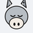

Script sources, GitHub session sync, and repository folders.
User scripts inject on http and https pages only after you grant this optional permission.
Main listing URL (often a GitHub API contents URL). Optional extra raw script URLs, one per line.
Set a sessions root directory in the repo. The Default folder uses
…/donkeycode-sessions.json at that root; other folders use
…/<folder path>/donkeycode-sessions.json (real directories on Git).
Token status:
Each folder keeps its own saved sessions. Optional GitHub path override replaces the folder name when building the path under the sessions root.
Active folder in popup: —
| Folder | Sessions | GitHub path override |
|---|
Browse directories in the configured repo (requires token and owner/repo).